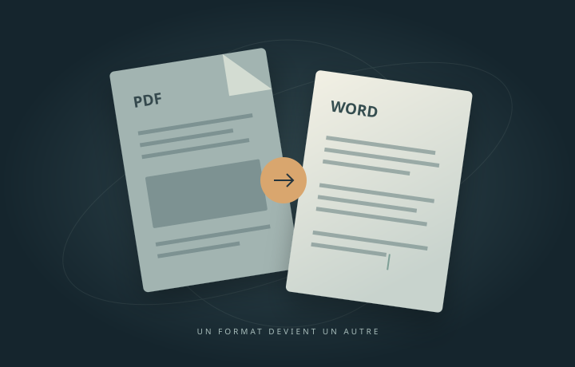

Calque
Convertir des PDF et des scans en Word dans le navigateur, sans envoyer les documents à un serveur. Choisir entre préserver l’apparence des pages ou récupérer un texte modifiable.
MATHIEU ORFILA
Je construis des outils et des expériences autour de ce qui m’anime. Voici mes projets, là où ils en sont.
Explorer les projets
Convertir des PDF et des scans en Word dans le navigateur, sans envoyer les documents à un serveur. Choisir entre préserver l’apparence des pages ou récupérer un texte modifiable.

Dessiner des systèmes, organiser les déplacements et les présenter en animation. Un espace pour préparer une idée de jeu et la transmettre à l’équipe.

Explorer un monde fantastique, combattre et résoudre des énigmes au fil d’une expédition. Une première aventure jouable dans le navigateur, dont l’univers continue de s’affiner.
EN DEHORS DES PROJETS
Le basket pour le collectif et la lecture du jeu. La F1 pour la précision. La science-fiction pour les horizons qu’elle ouvre.
Et une idée qui me suit : progresser par petites touches, avec curiosité.
Retrouver mes projets sur GitHub